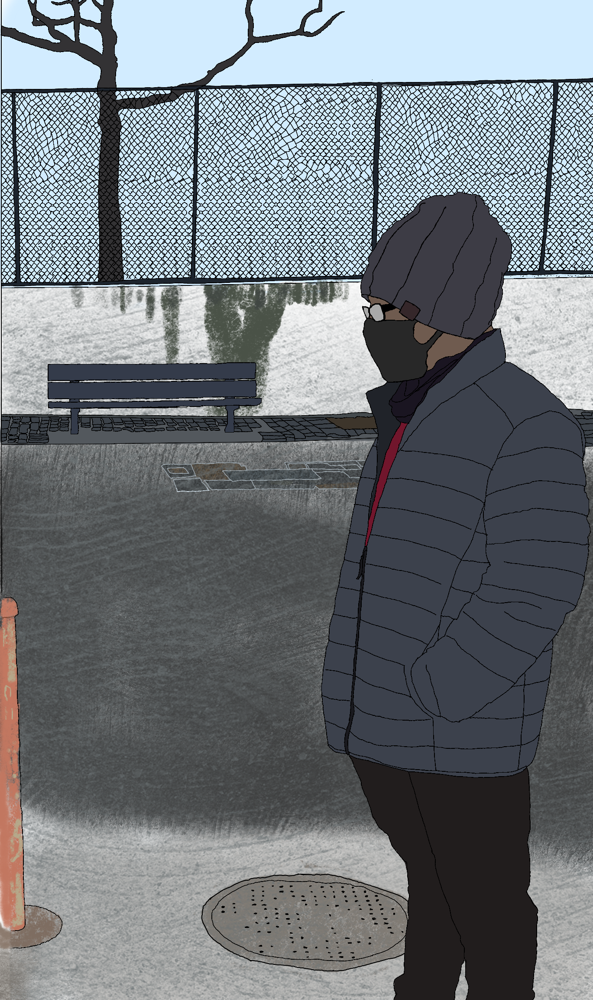
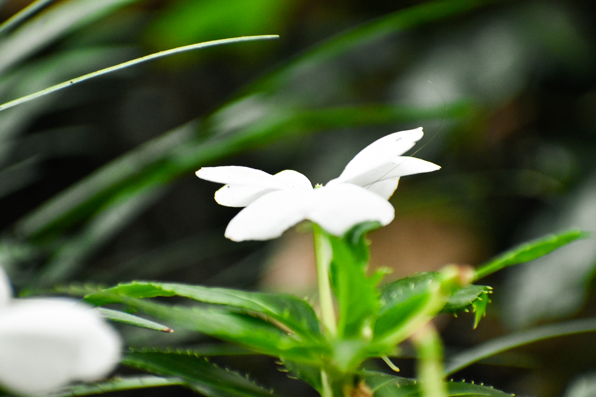

Welcome
Who Am I?
My name is Antone Smith.
Born in New York, I major in Media Studies: Emeriging Media at Hunter College. I'm expected to graduate after fall 2022.
Hobby 1
One of the things I like to do is draw, however, I draw during my free time. I do regular drawing, cray-pas drawing, digital drawing, and motion graphics sometimes. Some examples of cray-pas drawing can be found on Page 2(Drawing) and motion graphics page 6 (Motion Graphics) of my website showing my classwork and projects.

Game Project
Hobby 2
My second hobby is photography. Just like drawing I sometimes do photography depending on my time and the weather. Here's an example of a picture I took. Other pictures I did is on Page 6 of “Outside Work I Did”
White Flower